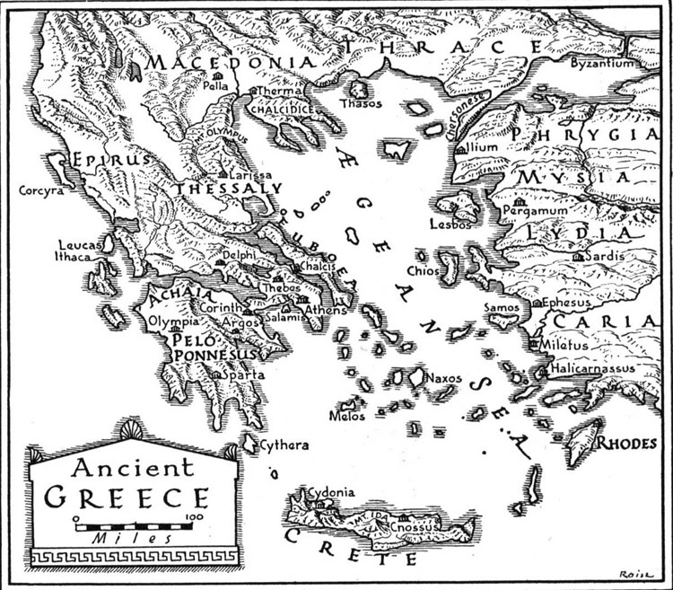
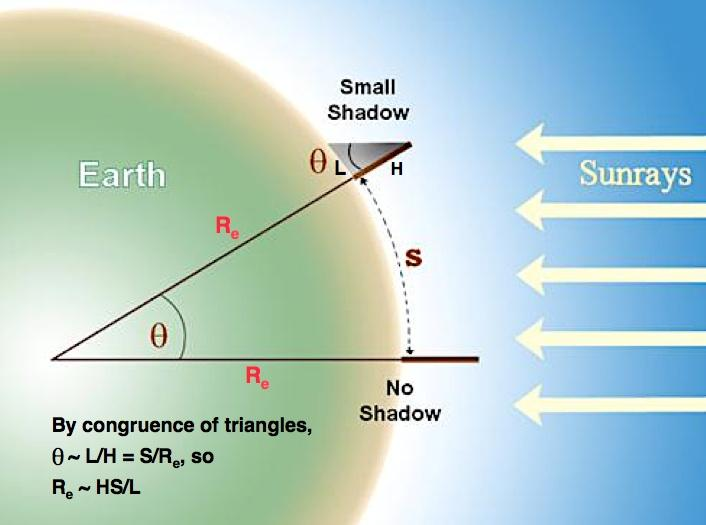
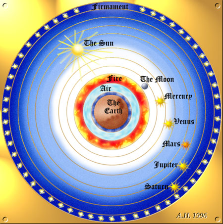
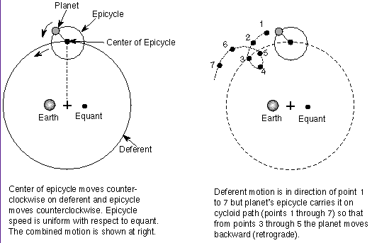
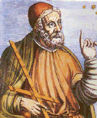
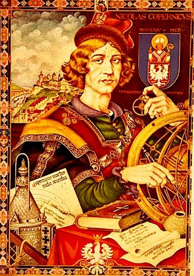
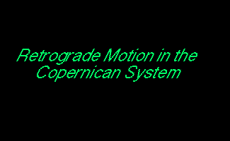
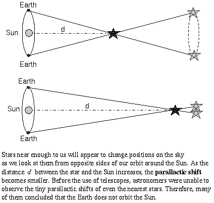

ASTR 1210 (O'Connell) Study Guide
6. TWO REVOLUTIONS: THE BEGINNINGS OF
SCIENTIFIC ASTRONOMY
|
"When human life lay
groveling in all men's sight, crushed to the earth under the dead
weight of superstition...a man of Greece was first to raise mortal
eyes in defiance, first to stand erect and brave the challenge...He
ventured far out beyond the flaming ramparts of the world and voyaged
in mind throughout infinity." |
-
So, only one of the hundreds of ancient cultures of which
we are aware made real progress toward scientific understanding. This
is a remarkable and sobering circumstance.
In fact, some writers argue that, far from being historically
inevitable, the development of proto-scientific thought in ancient
Greece was so fortuitous that we might still be in the "dark ages"
today without the Greeks.
Students could profitably spend some time contemplating the dominant
effects of historical contingency in shaping the familiar world
they see around them and how strange (and possibly awful) things might
be if our global or personal histories had been just a bit
different.
A. Introduction
Conclusions so far...- Sky phenomena and motions were important to most human cultures
- Astronomical time cycles were recognized and studied by many cultures
- Tracking astronomical cycles encouraged development of certain
technologies:
- Systematic, persistent observations
- Multi-generational methods of record-keeping (often no traces
left)
- Skilled design of simple observing "instruments"---e.g. special
alignments in buildings
- Basic types of geometry and counting/arithmetic
- Systematic, persistent observations
B. Greek Astronomy (ca. 600 BC - 200 AD)
A Mathematical Perspective
 With the Greeks, there is a major shift of emphasis from collecting/recording information to the interpretation of the physical nature of astronomical phenomena, ultimately without religious trappings.-
In earlier (and many later) cultures, cosmologies were
mythological or supernatural. They had a strong "projective"
tendency: human characteristics, inflated to divine proportions,
were imposed outwards on the cosmos. Direct, persistent, supernatural
control of sky phenomena was assumed.
Starting with the philosopher/scientist Thales of Miletus (ca. 600
BC), these elements were discarded by the Greeks. Thales insisted
that natural phenomena should be explained within nature without
appeal to supernatural beings or forces --- the essential first step towards
empirical science.
-
In astronomy and mathematics, the Greeks were beneficiaries of work
starting ca. 1700 BC by the Babylonians (from the
Tigris-Euphrates valley), who compiled extensive observations of the
sky, similar to the Maya, and were adept at basic arithmetic and
algebra. Their records were kept
on clay tablets,
which survived far better than papyrus scrolls and other early
ink-based technologies. The Greeks, however, quickly eclipsed the
earlier work in sophistication.
-
One important impetus for the Greek interest in both astronomy and
geometry was the need for accurate navigation around their
convoluted coastline and across their island provinces (click on the map
above).
Greek geometry, as summarized by Euclid ca. 300 BC, is, of course,
still the foundation of mathematics and is taught to millions of
people (however reluctant they may be) each year.
Astronomical Accomplishments
--- Anaxagoras (459 BC)
- The spherical shape of the Earth (ca. 500 BC).
-
Evidence:
-
Curvature of ocean horizon seen from good vantage points
Different stars visible from different latitudes
Length of day changes at different latitudes
Circular shape of Earth's shadow on Moon during lunar eclipses
Different shadow lengths at different latitudes at same time of day (Eratosthenes, see below) - The spherical shape of the Moon, the fact that it shines by reflected Sunlight, and the origin of lunar phases (Anaxagoras, ca. 450 BC).
- The origin of eclipses. Thales was the first to predict a solar eclipse, in 585 BC.
- The existence of the "precession of the equinoxes"
(Hipparchus, ca. 150 BC) -- the slow change in the location of the
celestial poles on the sky. This was a remarkable achievement given
the subtlety of the effect and the relatively poor quality of the
data.
-
For more details on lunar phases, eclipses, and precession
see
Lunar Motions.
- The diameter of Earth to an accuracy of about 150 miles
(Eratosthenes, ca. 200 BC). Eratosthenes' method uses simple
measurement of shadow lengths at noon at different latitudes on
a given day. It then applies the geometric concept of the
congruence of triangles, as shown in the diagram below.
If the Earth had been flat, the shadow lengths at the
two latitudes would have been the same.
-
Eratosthenes estimated the diameter of the Earth to be 8050 miles; the
true value is 7900 miles. An amazing feat, particularly if you
consider the fact that most "educated" people today, 2200 years later,
would have trouble figuring out how to do this (or how to explain
eclipses or the phases of the Moon).
 - The approximate distance to the Moon & Sun
(Aristarchus,
ca. 250 BC)
-
In his work On the Sizes and Distances of the Sun and Moon
Aristarchus applied geometry on a larger scale than
Eratosthenes (see extract above):
-
He first estimated the diameter of the Moon with respect to the Earth
by observing its size with respect to the Earth's shadow during a
total lunar eclipse (see the diagram
in Lunar Motions). Then,
by knowing the angle subtended by the Moon on the sky, he could
determine its distance (in units of the Earth's diameter) by solving
an isosceles triangle for its long sides (shown in
Study Guide 3).
He estimated the distance of the Sun by attempting to measure the
angular separation between the Sun and Moon on the sky at the precise
time when the Moon was at its first quarter phase. At that point, the
Moon is exactly half-illuminated by the Sun, implying that the Sun,
Moon, and Earth form a right triangle. Refer
to this figure. Knowing
the distance to the Moon and the two angles in the triangle allowed
Aristarchus to solve for the other sides of the triangle and obtain
the distance of the Sun. That then allowed him to determine the Sun's
diameter. He estimated that the Sun was six times the diameter of the
Earth.
Aristarchus' mathematical arguments were exactly right, but his
attempted measurements were erroneous --- not surprising because some
were actually quite difficult. He badly underestimated the distance
of the Sun (by a factor of 18 --- the Sun is actually 109 times the
diameter of the Earth). But his estimate was sufficient to suggest
that the Sun, not the Earth, might be the dominant object in
the solar system.
Scientific Cosmology
- The Greeks explored a wide variety of interpretations of the
physical universe. Early on (ca. 400 BC),
the
Atomists,
followers of Democritus and Epicurus, arrived at an
astonishingly modern interpretation in which all matter is composed of
indivisible particles called "atoms," which interact according to
natural laws. Gods or other supernatural influences were assumed to
be unimportant in controlling nature. The universe was thought to be
enormous, even infinite, and filled with worlds like Earth, many of
them inhabited by similar lifeforms. The atomists influenced a number
of thinkers, through the time of the Roman poet
Lucretius
(ca. 50 BC, quoted above), but they were overshadowed by the
philosophy of Plato and Aristotle, whose physical science was largely
erroneous.
-
It is remarkable that a concept as strange and completely unintuitive
as an infinite universe
arose so early in the history of scientific thinking. It was probably
the Greeks' work in mathematics and the realization of the existence
of arbitrarily large numbers that led them in this direction.
- The Greeks developed the first scientific cosmological models
- Greek models were intended to be consistent with their large and accurate collection of observations of the Sun, Moon, planets, and stars.
- They treated the Sun, Moon, planets, stars as inanimate physical objects, not living beings with supernatural volition and powers.
- Influenced by the
philosophical idealism of Plato &
Aristotle, who became the most important philosphers in history, they
attempted to deduce the character of nature from abstract
postulates (like mathematical axioms), with little appeal to empirical
tests and with explicit dismissal of experiments. Plato argued
that astronomers should not observe the sky but instead explore it by
pure thought (luckily, most Greek astronomers ignored this
admonition).
- On philosophical grounds, they favored a highly symmetrical (spherical), perfect universe.
- Drawing on the atomist interpretation of matter, they attached special, but arbitrary, characteristics to its basic building blocks: "earth," "air," "water," "ether," etc.
- Although a revolutionary improvement over supernatural
interpretations, this reliance on deduction instead of empirical
investigations ultimately misled Greek astronomers.
"Aristotle maintained that women have fewer teeth than men; although he was twice married,
it never occurred to him to verify this statement by examining his wives' mouths."
--- Bertrand Russell
 - The first attempts at serious cosmological models placed the Earth at the center of the universe and introduced the notion of "crystalline spheres" concentric with Earth, each carrying a celestial object and revolving uniformly on an axis. See the picture above. The Sun and all the other celestial bodies revolved around the Earth in this interpretation.
- Based on his realization that the Sun was probably considerably larger than the Earth, Aristarchus proposed instead a heliocentric (sun-centered) cosmos, in which the Earth moved in an orbit around the Sun and spun once a day on its axis. Unfortunately, his manuscripts on this interpretation were lost, and we have only a sketch of his thinking from other writers. But it is clear that he anticipated the correct interpretation of the solar system of Copernicus by some 1800 years. Other Greek scientists were not convinced by his arguments, however, and clung instead to the prevailing Earth-centered models.
The Ultimate Greek Cosmological Model
- Developed by Ptolemy, ca. 130 AD
- The model is geocentric, with a spherical Earth sitting stationary at the center of a spherical universe. Here is a simplified version of the model.
- In this picture:
- The Earth is fundamentally distinct from the planets. It occupies a special location and has special properties. Objects fall downward toward the Earth not because its gravity attracts them (as in our modern view) but because they tend to move toward the center of the universe.
- The terrestrial region is regarded as corrupted and changeable, but at larger distances from Earth the universe becomes ideal, perfect, unchanging.
- All celestial objects move in (perfect) uniform, circular motions around Earth
- Earth does not spin on its axis; rather, the universe revolves about
Earth once a day.
-
Note that as long as you do not admit it is possible for the Earth to
spin on its axis, the observed diurnal rotation of the sky requires
that the Earth be at the center of the Universe.
- But in the real solar system, the Earth moves
around the Sun, and the planetary orbits are not perfectly
circular.
- Therefore, Ptolemy had to add a number of complicated geometric features in order to reproduce the observed planetary motions.
- For instance, viewed from Earth, the planets all appear to undergo occasional "retrograde motion"---a brief, loop-like reversal in their general eastward motion in the sky with respect to the stars. This was readily visible in the computer planetarium simulations I showed in class. For an example, see this animation.
- To reproduce such motions, Ptolemy's model used "epicycles" (a compound system of wheels moving on wheels). See the illustration below. The epicycles were purely geometrical constructs, without any presumed physical reality to them.
-
 Here is an animation showing
how epicycles generate retrograde motion.
Here is an animation showing
how epicycles generate retrograde motion.
- Ptolomy's complex model was a success in that it produced
accurate predictions of the locations of the planets on the sky
for several centuries into the future. But because of its inherent
flaws, errors accumulated over time.

 Here is an animation
Here is an animation{kind=link}
{kind=link}
{kind=link}
{kind=link}
{kind=link}
{kind=link}
{kind=link}
{kind=link}
{kind=link}
{kind=link}
The Virtues of Greek Cosmology
-

Ptolemy's work is often treated dismissively because it "got the solar
system wrong" and was discarded by the "Copernican Revolution."
However, it is important to appreciate that this was an enormous
step forward over all the other modes of thinking at the time and,
in fact, over any other framework for understanding the universe for
more than a millennium(!)
Science is a cumulative and pan-cultural enterprise. It
discards wrong ideas that are found to be unsupported empirically but
retains useful ones. Statistically, most scientific
ideas have been wrong. Wrong ideas are just as important as "right"
ideas if they are credible in their time and establish empirical tests
that push the envelope of scientific understanding outward.
Despite their many misconceptions, the Greeks laid the groundwork for
all later science. Many features of the cosmology of the Greeks
propagated through to modern science, including these:
- They attempted to incorporate all of the extant reliable data.
- They insisted that theoretical models reproduce the observations.
- They regarded the planets, Moon, and Sun as inanimate, physical objects moving through space without supernatural interference. This was a tremendous break with the interpretations of almost all other cultures of the time.
- Their models were based on mathematics. All later science likewise used mathematics (of an ever-increasing sophistication). The modern view is that although all things may not BE numbers (as the Pythagoreans claimed), all things can be measured by numbers.
- The models emphasized geometrical symmetry. In modern science, symmetry emerged as a central concept in simplifying mathematical descriptions of nature. Symmetry was found to be the conceptual key to understanding subatomic particles, crystalline solids, DNA molecules, and a wealth of other phenomena.
C. Dark Interlude and Renaissance
The "dark ages" in Europe began with the barbarian influx from the East, 300-400 AD, coinciding with stultifying intellectual control imposed by the powerful Catholic Church. Science & other forms of original thinking fade out. Some new work was done ca. 650-1200 AD by Arab astronomers, who translated some Greek manuscripts and also elaborated and critiqued Ptolemy's models. The manuscripts were preserved by scholars but only taken seriously by most after 1000 AD. They were rediscovered and became the basis of science & philosophy in the early Renaissance. By 1500 AD, astronomy was back to where it had been in 200 AD. We had lost 1300 years! During 1500 - 1700 AD science reappears, gradually shifting to modern form. The European realization of the existence of the "new" world weakened faith in authorities who had proclaimed it couldn't exist or that the Earth was flat. Older ideas began to be treated skeptically, rather than accepted without question. A key facilitating technology in spreading new ideas and a flourishing interest in nature: mass-produced printed books. Within those 200 years, the motion of the planets around the Sun was finally understood, the existence of the force of gravity was recognized, and generalized laws of motion were deduced. These become the basis not just of astronomy and physics, but of technology and engineering, with incalculable effects on civilization.D. The Copernican Revolution
 Copernicus (d. 1543) was a Polish cleric with a strong interest in science. He was primarily a mathematician rather than an astronomer. He introduced the modern perspective of the solar system, the one which I used to explain the celestial motions of the Sun, Moon, and planets in earlier lectures. This involved as large a break (in fashionable parlance, a "paradigm shift") with the Greek interpretation of the cosmos as was the Greek break with the supernatural tradition. Copernicus supplied very little new data. His interpretation was based almost entirely on the Greek observations handed down from 200 AD. But he brought a fresh perspective to the problem of cosmic structure, one that was less influenced by the philosophical prejudices of the Greeks. Copernicus was a reluctant author, and his famous book De revolutionibus orbium coelestium (On the Revolutions of the Celestial Spheres) was only published shortly before he died.{kind=link}
Relative Motion
- Copernicus introduces the concept of relative motion: namely that apparent motions in the sky could be produced by motions of the Earth as well as by motions of the cosmic bodies and that it was difficult to tell these cases apart.
- For instance, the apparent revolution of the sky around the Earth once a day, which was traditionally interpreted as a rotating universe surrounding a central, stationary Earth, could equally well be produced by a spinning Earth in a stationary universe. But in that case, the Earth would not have to reside at the center of the universe---it could be anywhere, and we would still see the same relative motions.
Earth as a Planet
- Copernicus recognizes Earth to be a planet with two independent kinds of motion. It spins on its rotational axis once a day, and it orbits the Sun once a year.
- Identifying Earth as a planet was a much greater leap than might
be supposed. Remember that Copernicus did not have access to
telescopes, so he could not know that the planets were spherical or
not self-luminous (like the Earth). Until the time of
Galileo (1609, 66 years after Copernicus died), no one saw the planets
as anything other than glowing points of light.
-
The recognition that Earth was a planet also eliminated the
distinction that the Greeks had assumed between the physical
properties of the Earth and the objects in the celestial realm. It
was now possible that matter had universally common properties,
just as the Atomists like Democritus had proposed (and we know to be
true today).
- A wrenching change in perspective: Earth is now merely one among
the (six) known planets. It has been "dethroned" from its special
situation at the center of the universe and has lost the unique
properties associated with that location attributed to it by Aristotle
and the Greek philosophers. The Sun becomes the most important object
in the solar system.
- Removing the Earth from its imagined special cosmic location was the first step toward the modern theory of gravity. Aristotle believed that objects fell Earthward because it was at the center of attraction. But if the Earth is not at the center of the universe, then some other influence must be attracting matter to it. It would be another 120 years before Newton realized that this "influence" was the fact that each object with mass exerts an attractive force (gravity) on all other objects with mass.
- The extent to which conditions on the other planets resemble those on Earth was not known to Copernicus (without telescopes), but there was no evidence then that they were very different. A "multiplicity of worlds" therefore emerges, possibly inhabited worlds.
The Origin of Retrograde Motion
- In Copernicus' interpretation, the planets, including Earth,
continuously move in the same direction in their orbits
(counterclockwise around the Sun as seen from above Earth's north
pole). Planets nearer the Sun move around faster. The
retrograde loops that we see on the sky in the celestial paths of the
planets are therefore naturally explained as
the reflex of the Earth's orbital motion (i.e. the
fact that we observe the other planets from a moving platform). For
instance, Mars appears to move backwards in our sky as the
Earth "catches up to and passes" it in its orbit. See the animation
below:
 - But Copernicus' system still assumed uniform circular motions for objects, and therefore he still had to incorporate epicycles to reproduce the observations (because the real planetary orbits aren't pure circles)
{kind=link}
Heliocentric Cosmology
- Copernicus hence develops the heliocentric model, with the Sun in the center of the universe surrounded by 6 orbiting planets.
- Copernicus' arguments were based mainly on: (a) simplicity; and (b)
the recognition that some features of the planets' motion in Ptolemy's model (e.g.
retrograde loops) were synchronized with the motion of the Sun, which
implied the Sun was the key object.
Here is a video showing the differences
in motions between a heliocentric model and those in a geocentric
one.
- Three examples of simplification in the Copernican picture: the epicycles responsible for the retrograde motion of the planets were eliminated; the alignment of the centers of the epicycles for Mercury and Venus with the Sun was explained without arbitrary assumptions; and the fact that the relative sizes of the retrograde loops of the planets decreased with distance from the Earth had a natural, not arbitrary, explanation.
- But Copernicus had no conclusive observational evidence of
Earth's motion, either its spin or revolution around Sun.
- Such evidence became available only much later, with telescopes and other instruments which could measure, for instance, the "aberration of starlight" caused by the Earth's orbital motion around the Sun (Bradley, 1729) or the "coriolis effect" caused by its spin (best demonstrated by the Foucault pendulum--1851).
{kind=link}
Copernicus' Heliocentric Model
"Parallax" and the Size of the Universe
- In Copernicus' model the stars resided in a fixed shell at the edge of the spherical universe, but unlike most earlier models he allowed a finite thickness to this shell, so the stars were distributed in depth.
- Little could be said about the nature of the starry regions. The
one thing Copernicus did know was that the stars were very
distant because the "parallactic shift"
was too small to measure.
-

- The parallactic shift is a simple geometric effect in the heliocentric model. The apparent location on the sky of a nearby star with respect to more distant stars changes when it is viewed from different positions in Earth's orbit. See the drawing at the right and this QuickTime animation. In the geocentric model for the universe there would be no parallactic shift because the Earth did not move. For more discussion of astronomical parallax, click here.
- The parallactic shift decreases in direct proportion to the
distance of a star. The fact that no one in Copernicus' time could
measure a parallactic shift for any star implied either that the Earth
did not move around the Sun, contrary to Copernicus'
interpretation, or that the distance to the nearest stars, and
hence the universe, is enormously larger than most astronomers
were willing to accept then.
-
Naked eye observers cannot determine the angular separations between
stars to much better than one minute of arc. The absence of
parallactic shifts larger than this implies, in the heliocentric
model, that the stars must be at least 3000 Astronomical Units away.
(One AU is the radius of the Earth's orbit.) This is over 300
times the distance of Saturn and is a radical increase in the
scale of the universe surrounding the Earth by pre-Copernican
standards.
After their invention in 1609, telescopes could, in principle, have
provided much better parallax measurements. But the quality of
their lenses or mirrors was so poor that they were not up to this task
until over 200 years later.
- The first measure of the parallactic shift for a nearby star (about 1 arcsecond) was made by Friedrich Bessel using a special telescope called a heliometer in 1838, almost 300 years after Copernicus' death. Using these shifts, stellar distances can be calculated by simple trigonometry (the same method known as triangulation). The nearest stars are at distances of over 200,000 AU's. Although Copernicus would have been pleased to be proven right, he would have been flabbergasted by the scale of our star system.
- In Ptolemy's model, the universe must rotate around the Earth once a day. It therefore cannot be very large, although there was no definitive evidence concerning its size. In Copernicus' model, this diurnal motion is caused by the Earth's spin. The universe is stationary. This permits it, in principle, to be infinite in extent.
{kind=link}
{kind=link}
The "Copernican Principle"
-
Copernicus' system had profound philosophical, religious, and scientific
implications because it removes the Earth (and by inference, the human
race) from a privileged location. The idea that scientific arguments
should assume that human beings have a typical, rather than
special, perspective on the universe became known as the
"Copernican Principle."
So far, this assumption has been proven correct on three
entirely different scales: our solar system, our galaxy, and the
extragalactic universe. Even the solar system itself is not
special: we now have identified thousands of
other
planetary systems.
-
Bennett textbook: Ch. 3.2
Study Guide 6
Optional references: Bertrand Russell, A History of Western
Philosophy; Arthur Koestler, The Sleepwalkers; Timothy
Ferris, Coming of Age in the Milky Way; J. L. E. Dreyer,
A History of Astronomy from Thales to Kepler.
Puzzlah prep:
- A (the lighter object) hits the ground first.
- B (the heavier object) hits the ground first.
- They hit at the same time.
-
You have two objects, A and B, both of which are the same shape.
B weighs twice as much as A. You drop both simultaneously
from a height of 3 feet. What happens?
-
Bennett textbook: Ch. 3.3 (Copernicus, Tycho, Kepler, Galileo)
Study Guide 7
Web links:
- Slides shown in lecture
- The Stanford Encyclopedia of Philosophy (authoritative profiles of Greek and later philosophers and scientists)
- Internet History of Science Sourcebook (Fordham University)
- Greek
Astronomy (MacTutor)
-
More detailed notes on Greek science from Mike Fowler, UVa Physics.
-
Biography of Aristarchus
-
Aristarchos of Samos, The Ancient Copernicus by Sir Thomas
Little
- A modern
appreciation of Lucretius (Stephen Greenblatt, The New Yorker)
-
More information on the Ptolemaic model
-
Ptolemy Almagest Web Calculator
- Sailing the Wine-Dark Sea: Why the
Greeks Matter new, popularized description of Greek culture, by Thomas Cahill
- The Antikythera Device (Weijgaert)
-
More information on the Copernican system
- Photographic version of Copernicus' De revolutionibus
- "The Book Nobody Read: Chasing the Revolutions of Nicolaus Copernicus" by Owen Gingerich. An entertaining look at the impact of Copernicus' famous work.
 Previous Guide
Previous Guide
|
 Guide Index
Guide Index
|
 Next Guide
Next Guide
|
Last modified November 2023 by rwo
Text copyright © 1998-2023 Robert W. O'Connell. All rights reserved. Picture of sunset at Sounion by Bobesh. Pythagorean theorem animation by James Schombert. Eratosthenes' method drawing based on an original at IUCAAP. Epicycle and parallax drawings by Nick Strobel. Parallax animation copyright © by Richard Pogge. Retrograde motion animation from ASTR 161, UTenn at Knoxville. These notes are intended for the private, noncommercial use of students enrolled in Astronomy 1210 at the University of Virginia.